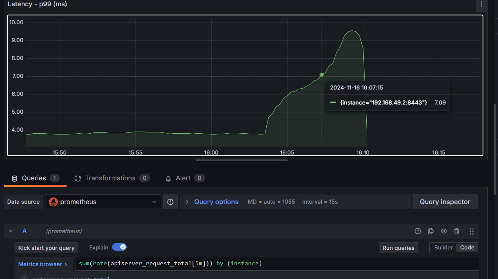
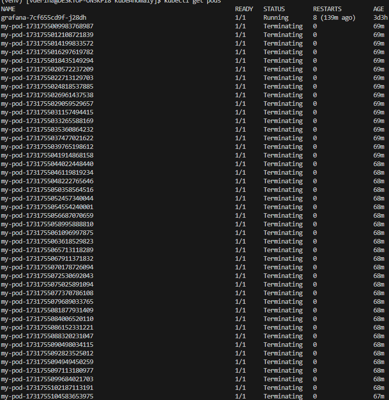
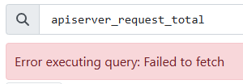

Моделируем поломку¶
Скрипт по развертыванию подов с интервалом в 2 секунды:
#!/bin/bash
# Указываем имя пода и образ, который будет использоваться
POD_NAME_PREFIX="my-pod"
IMAGE="nginx"
# Бесконечный цикл для создания подов
while true; do
# Генерируем уникальное имя для пода
POD_NAME="${POD_NAME_PREFIX}-$(date +%s%N)"
# Создаем под
kubectl run $POD_NAME --image=$IMAGE
# Ждем 2 секунды перед созданием следующего пода
sleep 2
done
#!/bin/bash
# Указываем префикс имени пода
POD_NAME_PREFIX="my-pod"
# Получаем список всех подов с указанным префиксом имени
PODS=$(kubectl get pods -o jsonpath="{.items[*].metadata.name}" | tr ' ' '\n' | grep "^${POD_NAME_PREFIX}")
# Удаляем все найденные поды
kubectl delete pods $PODS
Postmortem¶
- Скрипт был запущен в 16:03, остановлен ~16:07. Было создано 90 подов. Нагрузка на api сервер росла (см. фото ниже), но кластер работал, все поды были в статусе Running. 
-
На этапе удаления всех подов получили ошибку: "Error from server: etcdserver: request timed out".

-
Запустили скрипт повторно, и поды продолжили удаляться. Нагрузка на api сервер росла (см. фото выше).
-
После удаления поды перешли в статус Terminating: 
-
Запрос
kubectl get podsочень долго выполнялся и периодически выдавал ошибки:- Error from server (Timeout): the server was unable to return a response in the time allotted, but may still be processing the request (get pods)
- Unable to connect to the server: net/http: TLS handshake timeout
-
Prometheus выдавал ошибку: "Error executing query: Failed to fetch".
 -
Victoria Metrics выдавала ошибку: "ERROR: 503, error occured during search: cannot fetch query results from vmstorage nodes: cannot perform search on vmstorage victoria-metrics-victoria-metrics-cluster-vmstorage-1.victoria-metrics-victoria-metrics-cluster-vmstorage.default.svc.cluster.local.:8401: cannot obtain connection from a pool: cannot dial victoria-metrics-victoria-metrics-cluster-vmstorage-1.victoria-metrics-victoria-metrics-cluster-vmstorage.default.svc.cluster.local.:8401: dial tcp4: lookup victoria-metrics-victoria-metrics-cluster-vmstorage-1.victoria-metrics-victoria-metrics-cluster-vmstorage.default.svc.cluster.local. on 10.96.0.10:53: read udp 10.244.0.247:37372->10.96.0.10:53: read: connection refused".

-
UI Grafana упал.
Спустя 1 час 20 минут
- Все поды удалились.

-
Перезапустили port-forwarding для Grafana. Стали отображаться метрики. Но на момент поломки кластера с 16:10 до 17:20 метрики отсутствуют.

-
Victoria Metrics выдает новую ошибку: "Error executing query: Failed to fetch".

- Prometheus выдает новую ошибку: "Error executing query: Failed to fetch. Please check your serverURL settings and confirm server availability."